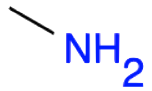
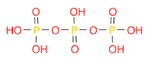

Chapter 3 Functional groups of biochemical importance
Chapter summary
- This chapter is a concentrate of the minimal organic chemistry knowledge to understand the biochemistry of life necessary for ecological and environmental engineering
- It first presents the hydrocarbon chains upon which all organic chemistry is based. It lists the difference between saturated, unsaturated, and aromatic chains
- The chapter then lists most important simple and complex functional groups that are commonly found in the biochemistry of life
Learning objectives
- Draw any alkane and alkene of less than 10 carbon atoms given the name using the condensed, structural, and skeletal formulae
- Define aliphatic vs. aromatic hydrocarbons
- Draw aromatic molecules such as benzene or phenol
- Explain why aromatic molecules are very stable
- Draw and recognize functional groups including hydroxyl, sulfanyl, amine, carbonyl, aldehyde, ketone, carboxyl, amide, ester, ether, phosphoester, thioester, hemiacetal, and diphosphoanhydride
- Use the JSME molecule editor to draw simple functionalized molecules given a name, and given a SMILES code
- Explain the structural properties provided by the amide functional group and their consequences for proteins
- Explain the role of the hemiacetal and hemiketal group in carbohydrates
In the previous chapter, we started introducing some rather complex organic molecules such as glucose, an amino acid, or ATP. Looking at these molecules may be a bit scary at first glance: lots of CHONSP everywhere, sometimes linear molecules, sometimes in cycle… No worries, though, the goal of this chapter is to provide the keys to recognize some of the key features of these molecules. Once this is recognized, things can make a lot more sense. And yes, it is important to be able to draw some of these molecules. In reality, there are about half a dozen to learn by heart, and all the other ones can be derived from them for our purposes here.
In the previous chapter, we were able to allocate electrons to CHONSP atoms, depending on the bonds together. We realized that oxygen had the central role and essentially was able to take all electrons from any other atoms bonded to it. There are about a dozen functional groups of biochemical significance that are important to recognize. Most of them involve different possibilities of bonds between C and O. Why do we care? Functional groups are associated with chemical and physical properties that make organisms be strong, or rather flexible, attract or repulse water, store or release energy. That is why.
3.1 Hydrocarbon chains
First of all, just about all life biochemistry is based on the carbon atom chains. This is where everything starts. It makes a lot of sense because you will discover later that indeed, life uses carbon atoms to store and release energy. So carbon atoms have 4 valence electrons.
- They can ‘gain’ electrons if they bind with hydrogen atoms,
- can share electrons when they bind together, or
- lose their electrons when bonded to O, N, or S.
The basis of the organic chemistry needed in ecological and environmental engineering is hydrocarbons. Hydrocarbons are organic compounds consisted entirely of C and H atoms.
3.1.1 Alkanes
Alkanes nomenclature is at the basis of all the naming of organic molecules. Just about all functional groups are essentially variations from the alkane skeleton. They are classified depending on the number of carbons constituting their atom chain, and their chain is always saturated with hydrogen.
Saturated with hydrogen? What does this mean? It first means that all bonds are single σ bonds, and second, that valence electrons of the carbon not used for C-C bonds, are shared with the one valence electron of hydrogen atoms to make C-H bonds. This also means that when a carbon chain is saturated with hydrogen, the carbon atoms have all the electrons for themselves. In other words, alkanes or alkane like hydrocarbon chains are the molecules that store the most electrons.
Some hydrocarbon chains are called unsaturated when between two carbons, two valence electrons are shared between carbon atoms to form a double or even triple π bond. Each of the two carbons involved are thus called unsaturated with hydrogen. Many commercials in the western world are advertising food with unsaturated fat (Figure 3.1): it just means that some carbons of the hydrocarbon chains of the lipids in the food are unsaturated! But we will discover this a little later.
Figure 3.1: Food containing unsaturated fats, reputed to be healthier. obtained at https://healthbeat.spectrumhealth.org/healthy-fats-for-healthy-blood-lipids/
Back to our alkanes. The simplest alkane is methane, made of one carbon atom. Four hydrogen are necessary to fulfill its octet rule and to saturate its carbon (Figure 3.2).
Figure 3.2: Lewis dot structure for methane
The final formula for methane is thus CH4.
The second simplest alkane is ethane, made of two carbon atoms bonded together using two of their valence electrons to make a covalent bond. Hydrogen atoms form bonds with the three valence electrons left on each of the carbon atoms, for a final formula of C2H6, or a condensed formula of CH3-CH3 (Figure 3.3).

Figure 3.3: Lewis dot structure for ethane
The third simple alkane is propane, made of three carbon atoms in an open chain. The central carbon is bonded to the outer carbons and only has two valence electrons available to bond with H, or for the central carbon to be saturated with hydrogen (Figure 3.4). The final formula of propane is C3H8, or its condensed formula is CH3-CH2-CH3.

Figure 3.4: Lewis dot structure for propane
The fourth simple alkane is butane (C4H10) with four carbons in its saturated open chain. The two central atoms are saturated with two hydrogen atoms to form a condensed formula of CH3-CH2-CH2-CH3, or CH3-(CH2)2-CH3.
The list goes on and on as adding a carbon consists in adding a -CH2- in the middle of the previous chain and in the formula. The general formula for alkanes is thus CnH2n+2. The ‘+2’ in the formula corresponds to the third H on each of the end carbons. In English, Mary Eats Peanut Butter is used as a mnemonic to remember the first four alkanes, as each first letter is the first letter of the respective alkanes. For longer chains, the Greek prefixes are used: pentane (5), hexane (6), heptane (7), octane (8), nonane (9), decane (10), dodecane (12), tetradecane (14), hexadecane (16), octadecane (18), eicosane (20), and docosane (22) to stop there. Table 3.1 summarizes some of the formulae and representations of alkanes.
| Number of C and formula | Prefix | Alkane name and condensed formula | Structural formula | Skeletal or Line structure |
|---|---|---|---|---|
|
1 CH4 |
meth- |
methane CH4 |
||
|
2 C2H6 |
eth- |
ethane CH3-CH3 |

|
|
|
3 C3H8 |
prop- |
propane CH3-CH2-CH3 |

|

|
|
4 C4H10 |
but- |
butane CH3-(CH2)2-CH3 |

|
|
|
5 C5H12 |
pent- |
pentane CH3-(CH2)3-CH3 |

|

|
|
6 C6H14 |
hex- |
hexane CH3-(CH2)4-CH3 |
Looking inside Table 3.1, it now appears that the same molecule can be represented in several ways. First the formula, in the first column where the number of atoms are compiled and added as a subscript near each atom. It is concise, but gives no information on how the atoms are structured together. In the third column, the condensed formula gives more information on how the hydrogen atoms are assembled relative to the carbon atoms. In the propane example, CH3-CH2-CH3 suggests that three hydrogen atoms are bonded to the end carbons, and two H are bonded to the central carbon. By convention, since the hydrogen can only make one bond, it is implied that in CH3-CH2, the hyphen ‘-’ represents the bond between carbons.
The structural formula provides a comprehensive illustration of all the bonds and all the atoms. But in organic chemistry, there are so many C and H atoms, that the structural formula becomes too crowded and not easily readable. Chemists have thus decided to simplify the formula representations as much as possible. One very common simplification is the Skeletal structure or line structure representation, illustrated in the fifth column of Table 3.1. As its names suggest, only the carbon skeleton is kept and the rest is implied. Butane for example in Table 3.1 and Figure 3.5 is represented as three angled line segments. It is implied that at the end of each segment, there is a carbon atom, and that each carbon is saturated with hydrogen. The zigzagging of the skeletal structure is also supposed to represent a little bit better how the atoms are thought to actually be intricate together. Actually, if you refer to the summary on electron orbitals, you will see that in alkyl chains, the carbons orbitals are in the sp3 hybridization form, which involves tetraedral shapes, hence the zigzaging. Additionally, because of the sp3 hybridization, the electrons are at their highest energy level! This should ring a bell and confirm that the secret of life to store energy is to store high energy electrons onto organic matter, and precisely onto C, N, and S atoms! All this might appear confusing at the beginning, but this is extremely logical, and helps tremendously when writing or reading molecules important to life and ecological engineering.

Figure 3.5: Illustration of the assumptions associated with the correspondence between skeletal structure and structural formula for butane
Alkanes provide the basis or skeleton of all other nomenclatures of environmentally relevant organic chemistry. Functional groups correspond in many cases to modifications of the -CH3 or -CH2- where one or several hydrogen atoms are replaced by other atoms, and in other cases to the bonds between two simpler molecules. But before we get there, it is important to address some other important hydrocarbons.
3.1.2 Unsaturated hydrocarbons
So what about unsaturated hydrocarbons? As stated before, unsaturated implies that between two carbons, two valence electrons are shared between carbon atoms to form a double or triple π bond. For the majority of the cases of interest for this book, there is only one double bond in the unsaturated hydrocarbon open chains. In this case, the suffix for the molecule name is changed. Instead of -ane for the alkanes, it becomes -ene for what is referred to as the alkenes. In the example of Figure 3.6, the dehydrogenation of carbons 1 and 2 leads to the formation of but-1-ene or α butylene.
Figure 3.6: Butene corresponds to the dehydrogenation of butane
If you read correctly, you just saw yet another nomenclature for the name. It turns out that 1) where the double bond is located matters very much for the molecule property, and 2) the steric configuration (where the atoms are in space relative to each other) can change dramatically as the double bond is rather rigid, and the atoms are not nearly as free to rotate around the π bond as they are with a σ bond (details in Appendix A). As a result, there are really three possible forms of butene (Figure 3.7).

Figure 3.7: The three butene isomers, respectively A: but-1-ene or α butylene,; B: (Z)-but-2-ene or cis-β-butylene; C: (E)-but-2-ene or trans-β-butylene
This is honestly outside of the scope of this book, but Figure 3.7 caption points several new nomenclatures. The ‘1’ and ‘2’ in but-1-ene and but-2-ene, and the α and β respectively point to the carbon number that has a double bond. All carbon atoms are given an ordinate number in a hydrocarbon chains (further details later). Then isomers B and C in Figure 3.7 differ by the sides on which the two end -CH3 (referred to as a radical because it is bonded to another carbon, and this radical name is methyl, as it is based on methane that would have lost a hydrogen) are located. The methyl groups are either together, or Zusammen in German, or cis, i.e., on the same side in Latin, or, they are on opposite sides, or Entgegen in German, or trans, i.e., on the other side in Latin. The term butylene is still used today as it is inherited from the French butylène.
Unsaturated hydrocarbon chains are rather present in lipids, but also in aromatic hydrocarbons. In the end, saturated and unsaturated hydrocarbon chains are referred to as aliphatic hydrocarbons, as opposed to aromatic hydrocarbons.
A second family of unsaturated hydrocarbon chains are the alkynes where there is a triple bond between two consecutive carbons. Honestly, this is extremely uncommon in biochemistry of life. The one rather famous molecule is acetylene, which is otherwise named ethyne, i.e., it is a two carbon chain with a triple bond (Table 3.6).
3.1.3 Aromatic hydrocarbons
Aromatic hydrocarbons or arenes are cyclic hydrocarbon chains that, as the suffix -ene implies, have at least one double bond between two carbons, but in reality have two or three double bonds. And a hydrocarbon chain with generally alternate single and double bonds that is aromatic is thus called an arene. Aromatic hydrocarbons are ring-shaped, have planar or flat structures, and are considered to be structurally strong molecules and difficult to hydrolyze. Many of these molecules have an aroma or specific odors, hence the name aromatic.
The strength and stability of these molecules is at the center of the stiffness of wood thanks to the lignin molecules, which contain lots of aromatic radicals. The following describes in details what at the electron orbital scale causes the aromatic hydrocarbons to have such structural stability. The quintessential model of the aromatic hydrocarbons of concern in biochemistry of life is the benzene ring. It has 6 carbons, with three double bonds, which implies that each carbon is bonded to two other carbons and is unsaturated with hydrogen and thus only has one hydrogen (Figure 3.8).

Figure 3.8: Two different resonance forms of benzene (top) combine to produce an average structure (bottom). By Edgar181 - Own work, Public Domain, https://commons.wikimedia.org/w/index.php?curid=2962329
Applying the Steric Number (SN) rule described here, SN for each carbon can be calculated as SN = (2 Carbon atoms + 1 hydrogen atom), or SN = 3. This suggests that the electron orbitals for each of the carbon atom are likely hybridized into sp2. This means that each carbon makes a σ bond with the two neighbor carbons, and with the hydrogen atom. This leaves essentially 6 p orbitals that can form double bonds as illustrated in Figure 3.8, or more likely a delocalisation of these electrons into a ring as represented in Figure 3.8. The molecular orbital theory suggests that alternating single and double bonds creates what is referred to as a conjugated pi bond system across multiple atoms, lowers the energy and stabilizes the molecule.
Figure 3.9: Benzene sp2 and p orbitals delocalization. Orbital drawning after Vladsinger, https://commons.wikimedia.org/w/index.php?curid=7531044
For the reasons described above, aromatic molecules are very stable, and do not break apart easily to react with other substances. Many of the aromatic rings in biological systems are based on the benzene ring, to which some of the hydrogens have been replaced by -OH, -CH3, etc. In benzene, each of the carbon atoms has 5 electrons for itself, slightly less than the 6 or 7 electrons available on carbons of the alkane molecules. Five electrons is more than the average carbohydrate carbon (4), and should theoretically be rather ‘attractive’ to energy releasing processes such as microbiological respiration. However, the delocalization of the p orbitals makes this molecule very stable and very difficult to break apart, and therefore rather ‘unattractive’ instead for energy release purposes, but extremely attractive for structural strength ones.
Etymology Corner
The word benzene comes from the German word benzin coined by Mitscherlich in 1833 (Mitscherlich 1833) from the benzoin resin. This is a dried exudation from pierced bark of trees of the genus Styrax (Styracaceae) mostly native from East and Southeast Asia (Sumatra, Java, Thailand), and used in perfumes, some kinds of incense, as a flavoring, and medicine (Wikipedia contributors 2019b). Benzoin resin is known from European pharmacists and perfumers since the 15th century. The word benzoin seems to be an oral transcription into German of the Arabic Lubān jāwī (لبان جاوي), which translates into Javan Frankincense (Wikipedia contributors 2019b), suggesting that the Arabs have known and traded this resin for a long time, along with many other types of Frankincense. To make things more complete and possibly confusing, the French chemist Auguste Laurent, named the same benzene substance phène in reference to the Greek word φαινω which means ‘I light’ as this substance was obtained from gases used for street lighting (Laurent 1836). This is the reason for the word phenol otherwise referred to as hydroxy-benzene and for the radical -phenyl, phenols, and phenolics described in this book. Historically, it seems that the naming in French was a bit of a political stence against the naming in German. Indeed the frictions between the French and the Germans were mounting at that time. Politics always play a role…!
It turns out that in addition to purely hydrocarbon arenes, there are aromatic compounds with other atoms than just C and H, that are derived from benzene, and are non-benzene based. They are referred to as heteroarenes or heterocyclic compounds. In simple rings, there tend to be 5 to 6 atom rings where most of the atoms are carbons. It is not possible to avoid these because they play a crucial role in the chemistry of life, particularly for RNA and DNA. The rules for aromaticity are described in details by Hückel’s rules, but for this book, one should remember that aromatic compounds are cyclic, planar, and have delocalized π orbitals which gives them strength and stability.

Figure 3.10: Homoarene benzene and three heteroarenes or heterocyclic hydrocarbons, including pyrimidine, imidazole, the combination of both forming purine. (with the H added, top, and without the H, bottom)
Notice in Figure 3.10 that it is implied that there is a lone pair of electrons not part of any covalent bond for the nitrogen atoms. Each nitrogen atom must always have three bonds in organic molecules. Replacing two of the benzene carbons with nitrogen atoms yields pyrimidine. Additions of simple radicals and functional groups to this molecule is at the basis of the nitrogenous bases named pyrimidines used in the RNA and DNA. Removing a carbon from pyrimidine yields imidazole, and combining a pyrimidine with an imidazole yields a purine. And yes, purines are the other types of nitrogenous bases used in the RNA and DNA. Important aromatic molecules indeed!
Do it yourself!
Before you get bored because there is just too much to read, it is time to practice and draw molecules and functional groups on your own! Functional groups are introduced in the sections below. We are lucky to have online access to great tools that make drawing molecules playful. The tool I propose to use is called JSME, standing for JavaScript Molecule Editor (Bienfait and Ertl 2013). It is maintained at https://jsme-editor.github.io/. I made this very simple tutorial on how this editor works in the following video.
In the tutorial, I mentioned that a molecule drawn can be exported as a univocal code. There are several accepted codes. One of which is the SMILES code, standing for Simplified Molecular-Input Line-Entry System. In the following exercises, you are asked to draw molecules in the editor, and I give the answers in SMILES code, so that you may check your answer.
Exercise 3.1 Draw some basic alkanes, alkenes, and aromatic molecules
In the JSME editor below, draw the molecules listed underneath. You can get the SMILES code by either clicking on the smiley icon, or, by clicking on the box with the blue triangles facing each other. You can then compare your answers to the ones below. The version of JSME you can see is from the minimal JSME page. If you do not have access to the page on your browser, you may try to go directly to this JSME page. Another very interesting page is a linkage between wikipedia and JSME available at www.cheminfo.org/wikipedia/ that gives information details about the chemical drawn in the JSME.
- Draw a molecule of dihydrogen phosphate \(H_2PO_4^{-}\) (Ans: O=P(O)(O)[O-])
- Draw a molecule of sulfate \(SO_4^{2-}\) (Ans: O=S(=O)([O-])[O-])
- Draw a molecule of nitrate \(NO_3^{-}\) (Ans:
[N+](=O)([O-])[O-])
- Draw a molecule of carbonate \(CO_3^{2-}\)
 (Ans: O=C([O-])[O-])
(Ans: O=C([O-])[O-])
- Draw a molecule of acetaminophen (Tylenol) (Ans: CC(=O)Nc1ccc(O)cc1)
- Draw a molecule of ibuprophen (Ans: CC(C)Cc1ccc(C(C)C(=O)O)cc1)
- Draw a molecule of aspirin (Ans: CC(=O)Oc1ccccc1C(=O)O)
- Draw a molecule of sorbitol, i.e., Hexane-1,2,3,4,5,6-hexol (Ans: OCC(O)C(O)C(O)C(O)CO )
- Draw a molecule of imidazole (formula drawn above) (Ans: c1c[nH]cn1 )
- Draw a molecule of pyrimidine (Ans: c2ncc1[nH]cnc1n2 )
- Draw a molecule of purine (Ans: c1cncnc1)
Equipped with the alkane, alkene, and aromatic hydrocarbon skeleton, it is now time to explore the common and important functional groups relevant to the biochemistry of life. There are essentially two types of functional groups, the ones existing on elementary alkane skeleton hydrocarbon resulting from the oxidation of one or several carbons of the alkane original molecule, and the ones resulting from the binding of elementary functionalized hydrocarbon chains. The following paragraphs present the important functional groups on elementary hydrocarbons.
3.2 Functional groups from alkane chain oxidation
The first set of principal functional groups relevant to biochemistry are summarized in Figure 3.11. The functional groups can be classified depending on the number of electrons that the carbon on the original alkane molecule (or more precisely the alkyl radical) may have lost to oxidation: 2, 4, or 6 (Figure 3.11).

Figure 3.11: Functional groups resulting from the differential oxidation (loss of 2, 4, and 6 electrons to O, S, and N) of an original alkyl carbon atom. Notice that the number of electrons stored on the carbon atom are illustrated in dark blue
Losing two electrons to either oxygen, sulfur, or nitrogen, generates alcohol (-CH2OH), thiol (-CH2SH), and alkyl amine (-CH2NH2) functional groups, respectively. When O, S, and N only ‘steal’ two electrons from the alkyl carbon, they are in the form of hydroxyl (-OH), sulfanyl (-SH), or amine (-NH2), all of which are also considered as functional groups.
Only oxygen can steal four electrons from carbon at once, to form aldehyde (-CHO when the carbon is an end carbon) or ketone (-CO- when the carbon is not an end carbon) functional groups. Within aldehydes and ketone, one can isolate the group C=O, which is then referred to as the carbonyl functional group, and the -C=O, which is then referred to as an acyl functional group (Figure 3.11). An aldehyde is thus an acyl group bonded to a hydrogen. An aldehyde is also a carbonyl group bonded to an alkyl radical (the open ended bond to the left) and a hydrogen. The carbonyl, acyl, hydroxyl, sulfanyl groups are thus identified to ease the description of organic molecules, and even of functional groups (further details later).
Losing six electrons automatically implies that the alkyl carbon has lost four to oxygen to form a carbonyl group, and, has then lost two additional carbons, either to oxygen to form a carboxyl or carboxylic acid group, or to nitrogen to form an amide group (Figure 3.11).
3.2.1 Hydroxyl and sulfanyl functional groups
We have now used the word radical several times. Technically in chemistry, a radical is an atom, molecule, or ion that has an unpaired valence electron. The radical hydroxyl is  and misses one valence electron. The hydroxy (without the ‘l’) functional group is -OH, implying that the hydroxyl radical is bonded to another atom. Hydroxy groups are very common in biochemistry of life. In reality, although the difference between hydroxyl and hydroxy group seems to be the proper nomenclature agreed upon by the International Union of Pure and Applied Chemistry - IUPAC, most chemistry books often used the expression ‘hydroxyl group’ and use the suffix ‘-yl’ for functional groups. Hydroxy groups are most often involved in alcohol and carboxylic acid functional groups.
and misses one valence electron. The hydroxy (without the ‘l’) functional group is -OH, implying that the hydroxyl radical is bonded to another atom. Hydroxy groups are very common in biochemistry of life. In reality, although the difference between hydroxyl and hydroxy group seems to be the proper nomenclature agreed upon by the International Union of Pure and Applied Chemistry - IUPAC, most chemistry books often used the expression ‘hydroxyl group’ and use the suffix ‘-yl’ for functional groups. Hydroxy groups are most often involved in alcohol and carboxylic acid functional groups.
The sulfanyl group -SH is the analog of the hydroxyl group. Oxygen and sulfur are on the same column in the periodic table (Figure 2.1) and have 6 valence electrons. Sulfur is less electronegative and does not readily ‘steal’ electrons as oxygen does. The sulfanyl functional group is involved in the thiol functional group.
3.2.2 Amine functional group
In organic chemistry, amines are compounds and functional groups that contain a basic nitrogen atom with a lone pair. Amines are formally derivatives of ammonia, wherein one or more hydrogen atoms have been replaced by a substituent such as an alkyl or aryl group (Wikipedia contributors 2019d).
Amines, very much like alcohols, are classified into primary, secondary, and tertiary amines, depending on the number of alkyl groups bonded to the nitrogen atom. The substituent -NH2 is called an amino group, hence the name amino-acids described in the next chapter (Figure 3.12). The nitrogen of amines always has 8 electrons for itself in organic molecules. For primary producers, amines are formed and incorporated into organic molecules directly from the uptake of ammonium, or, after the reduction of nitrate uptaken. Notice the tetrahedral shape of ammonia and amines. Amine groups are bonded to carbon atoms to form alkyl amine groups described below and for which a naming convention exists.

Figure 3.12: Ammonia and conjugate acid ammonium, and identified primary, secondary, and tertiary amines
Etymology Corner
The suffix of amine comes from the French suffix -ine, used to form words for derived substances. Amines are thus derived substances of ammonia or ammonium. Both words in English come from the sal ammoniac which is a rare natural salt made of ammonium chloride (NH4Cl). In history, this salt was exported from the hammoniacum region of the Roman province of Cyrenaica in present-day Libya. The Roman name hammoniacum actually comes from the Greek word Ammon. The Greeks have given this name to the Siwa oasis, known for its salt exports, in the middle of the vast sea of sand of the Lybian desert. The word Ammon is a contraction of the Greek word Ammos which means sand, and the name of the god from the nomadic tribes worshiped at Siwa, the Ram God Amon, identified at one point with the Egyptian god Amun Ra, and eventually revered as the king of gods. The mix of the part-Greek, part-Egyptian, and part-Libyan Ram god with the Greek Zeus, lead to Zeus-Ammon or Jupiter Ammon, god with a human head with the horns of a ram. The oracle of the god Ammon was located in the Siwa oasis. The sal ammoniac was particularly used for worshiping at that temple. The Greek word Ammon seems to be a voluntary play on words with Ammos, which means sand. So Ammon was the Zeus of the sand. And this is why there are two ‘m’ to the words ammonia and ammonium. It is unclear why the ‘c’ of ammoniac was dropped in English. The ‘c’ reappears in the expression Total Ammoniacal Nitrogen or TAN, which is used in some analytical laboratories and corresponds to the summation of ammonia and ammonium forms in solution.
3.2.3 Carbonyl and acyl functional groups
Very much like for hydroxyl and sulfanyl, the carbonyl and acyl groups have been given a name to ease the description of molecules or other functional groups, and are often part of larger functional groups. As described above and illustrated in Figure 3.11, the carbonyl is a carbon double bonded to an oxygen (C=O). The acyl group (-C=O) is a moiety, i.e., part of a molecule, of other functional groups such as aldehyde (-CHO) or carboxylic acids. Acyl groups can have long aliphatic chains on the left of -C=O, particularly when it corresponds to fatty acid residues in lipid molecules (details in section 4.5.3).
3.2.4 Alcohol functional group
In chemistry, an alcohol is any organic compound in which the hydroxy functional group (–OH) is bound to a carbon. Most of alcohol groups in organic chemistry are secondary alcohols, which means that the alcohol functional groups -CHOH- are usually embedded in longer carbon chains. Chemists make differences between the number of hydrogens that are bonded to the -COH radical (Figure 3.13). As presented in Figure 3.11, the carbon of alcohol functional groups still have 4 electrons for themselves, which corresponds to the number of valence electrons on C at the natural state. The glucose molecule, out of 6 carbon atoms, has 5 alcohol functional groups! On the nomenclature side, the condensed formula for the primary structure is -CH2OH, and for the secondary structure is -CHOH-. In the condensed formula, the hydroxyl radical OH is purposely separated from the rest to point out that this is an alcohol functional group (Table 3.2).
Figure 3.13: Generic alcohol functional group and the identified primary, secondary, and tertiary alcohols
The naming convention is to use the alkane prefix with the suffix -ol at the end (Table 3.2). An alcohol of propane would be called propanol. A propane with two or three alcohol functional groups would be called propan-di-ol or propan-tri-ol, respectively. Butan-1-ol in Table 3.2 suggests that the alcohol group is on the first carbon atom, and corresponds to a primary alcohol (Figure 3.13). A butan-2-ol, would have the hydroxyl on the second carbon of the alkyl chain, would correspond to a secondary alcohol (Figure 3.13), and would have CH3-CH2-CHOH-CH3 as a condensed formula.
| Nb of C atoms | Alcohol name and formula | Alcohol skeletal structure | Thiol name and formula | Thiol skeletal structure |
|---|---|---|---|---|
| 1 |
Methanol CH3OH |
Methanethiol CH3SH |
||
| 2 |
Ethanol CH2-CH2OH |
Ethanethiol CH2-CH2SH |
||
| 3 |
Propan-1-ol CH3-CH2-CH2OH |
Propanethiol CH3-CH2-CH2SH |
||
| 4 |
Butan-1-ol CH3-(CH2)2-CH2OH |
Butanethiol CH3-(CH2)2-CH2SH |
||
| 5 |
Pentan-1-ol CH3-(CH2)3-CH2OH |
Pentanethiol CH3-(CH2)3-CH2SH |
Etymology Corner
The etymology of alcohol seems to be rather obscure. It certainly comes from the Arabic kohl (كحل), ‘al’ standing for the article of kohl. Kohl refers to as an eyewash lotion, and a very fine and very pure powder used as eye shadow for a long time, possibly by the Egyptians and reported as early as 1278 in Spain. The migration of the meaning of the word from the ‘very fine and very pure powder’ to the ‘spirit of wine’ obtained by ‘very fine and very pure’ reiterated distillation is unclear. The Swiss chemist Paracelsus is generally given as the author in the XVIth century of the migration of the meaning of the word towards the ‘spirit of wine’, or ethanol and as we understand it today.
3.2.5 Thiol functional group
Thiols are the sulfur analogue of alcohols (that is, sulfur takes the place of oxygen in the hydroxyl group of an alcohol), and the word is [the combination] of “thio-” + “alcohol”, with the first word deriving from Greek θεῖον (theion) meaning “sulfur” (Wikipedia contributors 2019g).

Figure 3.14: Thiol group (left) is the analogue of the hydroxyl group of an alcohol (right)
As the functional group of the amino acid cysteine, the thiol group plays a very important role in biology. When the thiol groups of two cysteine residues (as in monomers or constituent units) are brought near each other in the course of protein folding, an oxidation reaction can generate a cysteine unit with a disulfide bond (−S−S−). Disulfide bonds can contribute to a protein’s tertiary structure if the cysteines are part of the same peptide chain, or contribute to the quaternary structure of multi-unit proteins by forming fairly strong covalent bonds between different peptide chains (Wikipedia contributors 2019g). This is presented in more details in the dedicated chapter on proteins
The naming convention is to use the alkane name with the suffix -thiol at the end. A thiol of propane would be called propanethiol.
3.2.6 Alkyl amines
Alkyl amines are another analogue of alcohols in the sense that an amine functional group replaces a hydroxyl group. The most important molecules where amines exist in biochemistry are amino acids as previously stated. The naming convention is to use the alkane prefix with the suffix -amine at the end (Table 3.3). An amine of propane would be called propanamine. Actually, this naming refers to the fact that an amine has been added to a propane. Another naming is that a propyl radical (CH3-CH2-CH2-) has been added to an amine. In that case, it would be called a propyl-amine. The first naming is alkyl centric, and the other is functional group centric. In the end, both naming are correct and accepted. Butan-1-amine in Table 3.3 suggests that the amine group is on the first carbon atom, and corresponds to a primary amine (Figure 3.12). A butan-2-amine, would have the amine on the second carbon of the alkyl chain, would correspond to a secondary amine (Figure 3.12), and would have CH3-CH2-CHNH2-CH3 as a condensed formula.
| Nb of C atoms | Amine name and formula | Amine skeletal structure | Amide name and formula | Amide skeletal structure |
|---|---|---|---|---|
| 1 |
Methanamine CH3NH2~ |
 |
Methanamide HCONH2 |
|
| 2 |
Ethanamine CH2-CH2NH2 |
Ethanamide CH2-CONH2 |
||
| 3 |
Propan-1-amine CH3-CH2-CH2NH2 propylamine |
Propanamide CH3-CH2-CONH2 |
||
| 4 |
Butan-1-amine CH3-(CH2)2-CH2NH2 |
Butanamide CH3-(CH2)2-CONH2 |
||
| 5 |
Pentan-1-amine CH3-(CH2)3-CH2NH2 |
Pentanamide CH3-(CH2)3-CONH2 |
For the anecdote, there are polyamine molecules, two of which are diamines called putrescine (butane-1,4-diamine) and cadaverine (pentane-1,5-diamine). They respectively have a butane and a pentane skeleton with an amine group on the two end carbons. And you guessed it, they have to do with cadavers. They are foul-smelling diamine compound produced by the putrefaction of animal tissue.
3.2.7 Aldehyde functional group
Aldehyde functional group consists in a carbonyl group with the carbon atom also bonded to hydrogen. This implies that aldehyde groups are necessarily at the end of an hydrocarbon chain. To differentiate between alcohol and aldehyde groups, the condensed formula for an aldehyde is -CHO. The carbon of an aldehyde functional group has lost 4 electrons to oxygen, and only has 3 for itself (Figure 3.15). Because of the electronegativity of the carbonyl group, aldehyde group are rather polarized, which makes them rather soluble in polar solvent such as water.
The general naming convention is to replace the -e of the alkane name with the suffix -al at the end. An aldehyde of propane would be called propanal (Table 3.4). Many fragrances (odors, aroma) are aldehyde molecules. The word aldehyde was coined by Justus von Liebig as a contraction of the Latin alcohol dehydrogenatus (dehydrogenated alcohol).
Figure 3.15: Generic aldehyde functional group with the allocation of the electrons to oxygen and carbon atoms
3.2.8 Ketone functional group
Ketone functional group consists in a carbonyl group included in the middle of a hydrocarbon chain. The condensed formula for a ketone is -CO-, or sometimes written as -(C=O)-. The carbon of a ketone functional group has lost 4 electrons to oxygen, and only has 2 for itself (Figure 3.16).
Figure 3.16: Generic ketone functional group with the allocation of the electrons to oxygen and carbon atoms
The general naming convention is to replace the -e of the alkane name with the suffix -one at the end. A ketone of propane would be called propanone (Table 3.4), and in fact is also called acetone for the reasons explained in the etymology corner summary below.
| Nb of C atoms | Aldehyde name and formula | Aldehyde skeletal structure | Ketone name and formula | Ketone skeletal structure |
|---|---|---|---|---|
| 1 |
Methanal CH2O formaldehyde |
|||
| 2 |
Ethanal CH2-CHO |
|||
| 3 |
Propanal CH3-CH2-CHO |
Propanone CH3-CO-CH3 acetone |
||
| 4 |
Butanal CH3-(CH2)2-CHO |
Butanone CH3-CH2-CO-CH3 |
||
| 5 |
Pentanal CH3-(CH2)3-CHO |
Pentan-2-one CH3-(CH2)2-CO-CH3 |
Etymology Corner
The English word ketone comes from the German Aketon, itself derived from the French acétone. The French chemist Antoine Bussy proposed to add the suffix -one to products of some his distillation experiments. One of which was obtained by the dry distillation of acetic acid (ethanoic acid), which he then named acétone (Bussy 1833). This can be somewhat confusing because acetic acid is a C2 and acétone is a C3 hydrocarbon… But science is rooted in history too!
3.2.9 Carboxyl functional group
The carboxyl group (properly called carboxy group by the IUPAC, but every text book uses interchangeably carboxyl radical and carboxyl group), is an aldehyde group that would have lost two additional electrons to oxygen via an hydroxyl group (Figure 3.17). The condensed formula for a carboxyl group is -COOH. The carboxyl group is always at the end of a hydrocarbon chain, in which case the group is referred to as a carboxylic acid. Yes, you read correctly, with the carboxyl group, we are entering the world of acid and base (sensu Brønsted), pH, etc. But why so?

Figure 3.17: Generic carboxyl functional group with the allocation of the electrons to oxygen and carbon atoms (top reaction), and delocalization of electrons on carboxylate giving carboxylates relative stability for 6 < pH < 8
Looking at the top row of Figure 3.17, it is obvious that there is plethora of electrons for the carboxyl group, all captured by the two oxygen atoms. However, the level of energy to maintain contiguous double bond of the carbonyl and the single bond of the hydroxyl groups is higher than when the hydroxyl group loses a proton H+, leaving the oxygen of the hydroxyl group to be negative. Without the hydrogen, the extra electron can, with the π electrons of the double bond of the carbonyl group, be delocalized (bottom row of Figure 3.17). This is not too distant from the aromatic molecules, in that the -COO- end is rather stable. This explains why the carboxyl group behaves as an acid as it can readily release an H+ in solution. The stability of the carboxylic acid form (-COOH) versus its conjugate base form (carboxylate -COO-) depends on the pH of the solution and is discussed in the dedicated acid-base chapter. Because of the density of electrons near the oxygen atoms, the functional group is very polar, even in its acid form, and rather hydrophylic.
The general naming convention for the carboxyl group is two fold. For the acidic form (-COOH), it is to replace the -e of the alkane name with the suffix -oic acid at the end. A carboxylic acid of propane would be called propanoic acid. For the anionic form (-COO-), the naming convention is to replace the -e of the alkane name with the suffix -oate at the end. The anion form of a carboxylic acid of propane would be called propanoate.
| Nb of C atoms | Carboxylic Acid name and formula | Carboxylic Acid skeletal structure | Carboxylate name and formula | Carboxylate skeletal structure |
|---|---|---|---|---|
| 1 |
Methanoic acid CHOOH formic acid |
Methanoate CHOO- formate |
||
| 2 |
Ethanoic acid CH2-COOH acetic acid |
Ethanoate CH2-COO- acetate |
||
| 3 |
Propanoic acid CH3-CH2-COOH |
Propanoate CH3-CH2-COO- |
||
| 4 |
Butanoic acid CH3-(CH2)2-COOH |

|
Butanoate CH3-(CH2)2-COO- |
|
| 5 |
Pentanoic acid CH3-(CH2)3-COOH |
Pentanoate CH3-(CH2)3-COO- |
3.2.10 Amide functional group
The amide functional group can be seen as a derivative of carboxylic acid where the hydroxyl group is replaced by the amine functional group. In that case, it can be seen as an oxidation of a single carbon of an alkyl radical. In reality, for most amide groups, at least one of the hydrogen of the amine group is replaced by another hydrocarbon chain, as illustrated in Figure 3.18 below. In that case, amides can be seen as assemblages of functionalized molecules described in the next section.
Figure 3.18: Generic amide functional groups, with the allocation of the electrons to oxygen, nitrogen, and carbon atoms.
Because oxygen is more electronegative than nitrogen, and because of the double π bond of the carbonyl (C=O) group, the lone pair available on the nitrogen tends to be delocalized into the carbonyl group, forming a partial double bond between nitrogen and the carbonyl group (Figure 3.19).
Figure 3.19: Generic amide functional groups, with the allocation of the electrons to oxygen, nitrogen, and carbon atoms.
This forms an electron resonance system that is rather stable. In fact, experience shows that the amide functional group is planar without free rotation about the C-N bond, which fits well with the resonance structure and the partial double bond between C and N (Figure 3.20).
Figure 3.20: Amide functional group, with the R groups as methyls. The colors follow for C, H, O, N, respectively grey, white, red, and blue. Notice that the amide group is planar
This property actually has some fantastic consequences in the chemistry of life. The amide functional group corresponds to the peptidic bond existing between consecutive amino acids in a protein (details in section 4.3 dedicated to proteins). In other words, because of the resonance structure and the partial double bond of the amide functional group, hence its strong and planar structure, proteins can take a specific and rigid structure in three dimensions. The amide functional group is present in sphingolipids and make these molecules a lot more rigid than the other membrane lipids, and thus play a role in the insertion of proteins in lipid rafts of membranes (details in section 4.5.6).
The naming convention is to use the alkane prefix with the suffix -amide at the end (Table 3.3). An amide of propane would be called propanamide. The generally accepted condensed formula for amides is -CONH2, making butanamide have CH3-(CH2)2-CONH2 as a condensed formula (Table 3.3).
3.2.11 Methoxy functional group
The methoxy functional group (-OCH3) is not nearly as well known as the ones presented above. However, the methoxy functional group is very common among phenolics, which are a group of secondary metabolites introduced in chapter 4. Because of lignins, phenolics are the second most represented molecules in mass, after cellulose! Many phenolics are the molecules for aromas, colors, natural pesticides, or structure (e.g., lignins). The methoxy group bonded to an aromatic ring can be seen as an ether bond between the aromatic ring and a methyl group (Figure 3.21).
Figure 3.21: Three common notations for the methoxy functional group (in blue). methoxy groups are generally found on aromatic groups where they generally serve as Electron Donating Groups
The methoxy group, along with the hydroxyl group, is a very common substituent on the aromatic ring of phenolics molecules, probably because it acts as an Electron Donating Group (the curious among you can read the details in the glossary) to the aromatic ring, balancing the tendency of other groups to withdraw electrons from the aromatic ring.
This paragraph completes the list of principal functional groups of major importance for biochemistry. This list is not exhaustive but sufficient for the goals of this book.
Do it yourself!
In the second video tutorial, you can find how to draw the principal functional groups described in the first part of this chapter.
Exercise 3.2 Draw some basic molecules with acids, alcohols, and amide groups
In the JSME editor below, draw the molecules listed underneath. You can get the SMILES code by either clicking on the smiley icon, or, by clicking on the box with the blue triangles facing each other. You can then compare your answers to the ones below. The version of JSME you can see is from the minimal JSME page. If you do not have access to the page on your browser, you may try to go directly to this JSME page. Another very interesting page is a linkage between wikipedia and JSME available at www.cheminfo.org/wikipedia/ that gives information details about the chemical drawn in the JSME.
- Draw a molecule of propanoic acid (Ans: CC(=O)O )
- Draw a molecule of butyl amine (Ans: CCCCN )
- Draw a molecule of propane-tri-ol (Ans: OCC(O)CO ). This molecule is more commonly called glycerol
- Draw a molecule of propanamide (Ans: CCC(N)=O ).
- Draw a molecule of oleic acid, the fatty acid of olive oil (carboxylic acid with 18 carbon and a double bond at carbon #9) (Ans: CCCCCCCCC=CCCCCCCCC(=O)O )
The next part explores more complex functional groups.
3.3 Functional groups from bonding of functionalized organic molecules
The second set of principal functional groups relevant to biochemistry results from the binding of simpler functional groups described above. Figure 3.22 below summarizes the principal complex functional groups resulting from the binding of two simple functional groups. It becomes very apparent that the alcohol and carboxyl functional groups play, with phosphate, a preponder role in the formation of complex functional groups, and in the binding of simple molecules together to form more complex ones. Each of the groups are presented in more details below.
Figure 3.22: Complex functional groups resulting from the combination of simple functional groups illustrating the preponderant role of alcohol, carboxylic acid and phosphate
3.3.1 Ester functional group
Esters are common in organic chemistry and biological materials, and often have a pleasant characteristic, fruity odor. Ester functional groups are formed from the condensation reaction between a carboxylic acid and an alcohol group (Figure 3.23). Because of the electronegativity of the oxygen and the double π bond of the carbonyl, the hydroxyl group in the carboxyl group reacts with the hydrogen of the alcohol group to form the ester bond. The ester bond is essential in biochemistry particularly for lipids.

Figure 3.23: Esterification: condensation reaction between a carboxylic acid with an alcohol
Esters are named as if the alkyl chain from the alcohol is a substituent. This is followed by the name of the parent chain from the carboxylic acid part of the ester with an –e remove and replaced with the ending –oate. There are more subtil naming conventions from esters, particularly when the carbon bonded to the ester bond in the substituent chain is not an end carbon, but this is unimportant for our goal here. Additional naming nomenclature details can be found here.
Figure 3.24: The substituent alkyl chain from the alcohol is a propyl. The parent chain name with a carboxyl group is ethanoic acid, which in the ester bond, becomes ethanoate. In the end the name of the molecule is propylethanoate
3.3.2 Thioesters
Following the analogy between alcohol and thiol functional groups, thioesters are the analogue of esters. Thioester functional groups are formed from the condensation reaction between a carboxylic acid and a thiol group (Figure 3.25).
Figure 3.25: Thioesterification: condensation reaction between a carboxylic acid with a thiol. Notice the skwiggly blue line illustrating an energy bond.
In the thioester functional group, there are a great number of somewhat mobile electrons next to each other, namely through the double oxygen bond, and thanks to the sulfur atom, which has d orbitals. As a result, the C-S bond (C of the carbonyl (C=O)) is reputed to be unstable because of the electronic repulsion, and was often represented with the tilde (~) sign in the past (Lipmann 1941) and misnamed ‘high energy bond’. In reality, it is the hydrolysis of the thioester bond that releases energy, i.e., that is exergonic (more details in section dedicated to ATP). This suggests that another source of energy is needed to make the C-S bond in the first place. This is detailed in this chapter. This property is paramount and explains the central role or the major thioester example in biochemistry, i.e., the famous acetyl-coA. This complicated molecule’s function is to deliver the acetyl group to the Krebs cycle to be oxidized for energy production. The acronym coA stands for coenzyme A, i.e., a non-protein enzyme.
3.3.3 Phosphoesters
The second analogue to esters are the phosphoesters. This time, the carboxylic acid is replaced by a phosphoric acid H3PO4. In reality, depending on the pH, the actual form of the acid might be H2PO4-, HPO42-, or PO43- (Figure 2.7), all of which are loosely referred to as ‘phosphates’ (details in section 11 dedicated to acid-base reactions). So phosphates can react with alcohol functional groups to form phosphoester bonds (Figure 3.26).

Figure 3.26: Phosphoesterification: condensation reaction between a phosphate with an alcohol
The most famous phosphoester bond is actually the phosphodiester bond that binds nucleotides together in the RNA and DNA molecules.
Etymology Corner
The word ester has been coined by German chemist Leopold Gmelin in the 1820s. For some, this is a “pure invention” from Gmelin; others suggest that it is a contraction from the German Essigäther name for ethyl acetate, from Essig which means vinegar and Äther, which means ether. Ethyl acetate has a fruity pleasant smell. It is likely that Gmelin used the word ester after the famously beautiful Queen Esther from the Book of Esther in the Hebrew Bible.
The word ether was first introduced by the German-born chemist Frobenius in 1729 (Frobenius 1729) when describing the properties of diethyl ether and he named this substance “Spiritus Vini Æthereus”. The word Æthereus most likely refers to the volatility of ethers rising to the sky. The Latin word aethēr from Ancient Greek αἰθήρ (aithḗr) refers to the “highest and purest part of the atmosphere, to air, heavens, sky, light of day, but also ethereal matter surrounding a deity” (“Ether - Wiktionary,” n.d.). This corresponds to the time when the ancients did not know about the vacuum of space and named æther the medium supposed to fill unoccupied space above the atmosphere and able to transmit heat and light.
3.3.4 Ether functional group
Ether functional group result from the condensation reaction between two alcohol groups (Figure 3.27). Ethers are very volatile compounds. Diethyl ether (CH3-CH2-O-CH2-CH3) is commonly refer to as ether by itself. It is a volatile flammable liquid and has been used as anesthetic for a long time. Its side effects of post-anesthetic nausea and vomiting have made it seldom used in the XXIst century.
Figure 3.27: Etherification: condensation reaction between two alcohols
Ether functional group is extremely common in carbohydrates, although it is referred to as the glycosidic bond then because there is at least one carbohydrate involved.
3.3.5 Disulfide functional groups
Dissulfide function groups are common in proteins are also often referred to as disulfide bridges.
3.3.6 Hemiacetal and hemiketal functional groups
A hemiacetal or a hemiketal is a compound that results from the addition of an alcohol to an aldehyde or a ketone, respectively. Hemiacetal and hemiketal groups are extremely important in biology as they are responsible for the cycling of carbohydrate monomers! The prefix hemi- which means half in Greek, suggests that this is only half a reaction. An acetal or ketal would be the full reaction, but this is besides the point because the hemiacetal and hemiketal are the important groups in biochemistry.
Figure 3.28: Addition of an alcohol nucleophile to a ketone or aldehyde forms an hemiketal and hemiactal functional group, respectively
As illustrated in Figure 3.28, there is an asymetry in these two functional groups, with a hydroxyde group above and an alkyl ether group at the bottom. This asymetry is one of the reasons why these functional groups are not very stable theoretically. However in cyclic molecules like glucose (Figure 3.29) or fructose (Figure 3.30), these functional groups are stable, yet easily reversible.
Figure 3.29: Intramolecular cyclic hemiacetal formation in glucose and more generally for pyranose hexoses

Figure 3.30: Intramolecular cyclic hemiketal formation in fructose and more generally for furanose hexoses
This property is essential and explains why glucose can, when polymerized, form cellulose, a stable fiber, and, be easily transformed into its linear not cyclic form where it can be hydrolized for energy generation! More details in section 4.2.1.
3.3.7 Anhydride and phosphoanhydride functional groups
The condensation reaction between two carboxylic acids leads to the formation of the anhydride functional group (Figure 3.31). Honestly, this functional group is not particularly common in biochemistry.
Figure 3.31: Condensation reaction between two carboxylic acids results in the formation of an anhydride functional group
However, its phosphorus analogue has a major role in the biochemistry of life. The condensation of a phosphate and a carboxylic acid yields a phosphoanhydride bond (see Table 3.6). The condensation of two phosphates yields a diphospho anhydride bond (Figure 3.32).
Figure 3.32: Condensation reaction between two phosphates results in the formation of a phosphoanhydride functional group. The resulting two phosphate molecule is called a pyrophosphate. The skwiggly blue line has been added to show that the hydrolysis of the anhydride bond releases energy
Similarly to thioesters, and at a higher energy level, the concentration of electrons at the diphospho anhydride bond creates great instability between bonded phosphate tetrahedra (Degens 1989). As a result, the hydrolysis of this bond is exergonic and releases energy. This has been represented in Figure 3.32 above with a skiggly line. Many biochemists have banned the used of this skwiggly line (e.g., Moran 2012) and the concept of ‘high enrgy bond’ introduced by Lipmann in -Lipmann (1941) and represented as a “~”, as it gave the false impression that the bond in itself had a high energy, which it does not. We have decided to use another skwiggly representation to show the instability of this linkage and hence the energy release during hydrolysis.
The hydrolysis of one of the diphospho anhydride bond is the fundamental principle for the release of energy from ATP, Adenosine Tri-Phosphate, producing an ADP (Adenosine Di-Phosphate) and a phosphate group. ATP can be formed from the assemblage again of ADP plus a phosphate. The source of energy for reassembling ATP is mechanical at the molecular scale (details in section 5.2 dedicated to ATP and energy).
Exercise 3.3 Draw organic molecules important for the chemistry of life
In the JSME editor below, draw the molecules listed underneath. You can get the SMILES code by either clicking on the smiley icon, or, by clicking on the box with the blue triangles facing each other. You can then compare your answers to the ones below. The version of JSME you can see is from the minimal JSME page. If you do not have access to the page on your browser, you may try to go directly to this JSME page. Another very interesting page is a linkage between wikipedia and JSME available at www.cheminfo.org/wikipedia/ that gives information details about the chemical drawn in the JSME.
- Draw a molecule of pentyl hexanoate (Ans: CCCCCOC(=O)CCCCC )
- Draw a molecule of dethyl ether (Ans: CCOCC )
- Draw a molecule of cadaverine (Pentane-1,5-diamine) (Ans: NCCCCCN ).
- Draw a molecule of pyrophosphate (Ans: O=P([O-])([O-])OP(=O)([O-])[O-] )
- Draw a molecule of triphosphoric acid (~triphosphate) . (Ans: O=P(O)(O)OP(=O)(O)OP(=O)(O)O)
- Draw a molecule of adenine . It is an aminated pyrimidine (Ans: Nc1ncnc2nc[nH]c12)
- Draw a molecule of adenosine . It corresponds to an adenine bonded to a ribose via a N-glycosidic bond (Ans: Nc1ncnc2c1ncn2C3OC(CO)C(O)C3O)
- Draw a molecule of ATP . ATP is a triphosphate bonded to an adenosine via a phosphoester bond. (Ans: C1=NC(=C2C(=N1)N(C=N2)C3C(C(C(O3)COP(=O)(O)OP(=O)(O)OP(=O)(O)O)O)O)N. Find the two diphosphoanhydride bonds.
- Draw this molecule (CC(=O)OC1=CC=CC=C1C(=O)O), and identify the benzoic acid, the acetoxy group, and the ester bond. Guess the name of this very common molecule!
3.4 Summary on functional groups and important radicals
The list provided above is not exhaustive, but enough to identify most functional groups in organic molecules associated with the biochemistry of life. The names of these functional groups are used throughout this book and this chapter has been designed to serve as a reference when in doubt.
In addition to functional groups, there are several molecules or radicals, which are very common and must be known. They are illustrated in Figure 3.33. The phenyl radical is a benzene ring. The reason for the name is explain in an etymology corner before. Phenol is an hydroxy benzene. Acetic acid is the acid in vinegar and is also named ethanoic acid. The base conjugate is called acetate or ethanoate. Glycerol is a propane-triol and serves as a skeleton to lipids where it forms ester bonds with fatty acids. Glyceraldehyde is a glycerol for which one carbon has been oxidized into an aldehyde. The phosphated version of glyceraldehyde, i.e., glyceraldehyde 3-phosphate (3 because the phosphoester bond is on the third carbon of the glyceraldehyde) or more commonly referred to as G3P, is generally considered the prime end-product of photosynthesis. Glucose is then assembled from two G3P. Pyruvate, the base conjugate of pyruvic acid, is the end-product of the glycolysis, i.e., the first step in the oxidation of glucose requiring no exogenous electron acceptor. A list of for acid and acyl radicals commonly found in biochemistry can also be found at this site, and more generally the nomenclature of organic chemistry can be found on the IUPAC nomenclature website.
Figure 3.33: Very common molecules and radicals that have special names in addition to the IUPAC ones
Finally, the functional groups of importance are summarized in Table 3.6 and an example is given to each one when applicable.
| Functional group name | Functional group structure | Structural formula and name | Skeletal and condensed formula |
|---|---|---|---|
| Hydrocarbons | |||
| saturated alkane bond |

|
ethane |
 CH3-CH3 |
| alkene double bond |
 ethene |
 CH2=CH2 |
|
| alkyne triple bond |

|
 ethyne or acetylene |
CH≡CH |
| Functional groups resulting from the replacement of one or several H on elementary hydrocarbon chains | |||
| hydroxyl | |||
| sulfanyl | |||
| amine |

|
 ethyl amine |
 CH3-CH2NH2 |
| alcohol |
 ethanol |
CH3-CH2OH |
|
| thiol |
ethanethiol |
 CH3-CH2SH |
|
| amide |
 ethanamide |
||
| carbonyl |

|
||
| acyl | |||
| ketone |

|
 propanone or acetone |
CH3-CO-CH3 |
| aldehyde |
 ethanal |
CH3-CHO |
|
| carboxylic acid |
ethanoic acid or acetic acid |
CH3-COOH |
|
| Functional groups resulting from bonds between elementary molecules | |||
| ester |
 propyl ethanoate |
CH3CO-O-CH2-CH2-CH3 |
|
| thioester |

|
 S-ethyl ethanethioate |
 CH3-CO-S-CH2-CH3 |
| phosphoester |
methyl phosphate |
||
| ether |

|
 diethyl ether |
 CH3-CH2-O-CH2-CH3 |
| anhydride |

|
||
| phosphoanydride |

|
diphospho anhydride or pyrophosphate |
|
Learning objectives recall
After this chapter, you should be able to:
- Draw any alkane and alkene of less than 10 carbon atoms given the name using the condensed, structural, and skeletal formulae
- Define aliphatic vs. aromatic hydrocarbons
- Draw aromatic molecules such as benzene or phenol
- Explain why aromatic molecules are very stable
- Draw and recognize functional groups including hydroxyl, sulfanyl, amine, carbonyl, aldehyde, ketone, carboxyl, amide, ester, ether, phosphoester, thioester, hemiacetal, and diphosphoanhydride
- Use the JSME molecule editor to draw simple functionalized molecules given a name, and given a SMILES code
- Explain the structural properties provided by the amide functional group and their consequences for proteins
- Explain the role of the hemiacetal group in carbohydrates